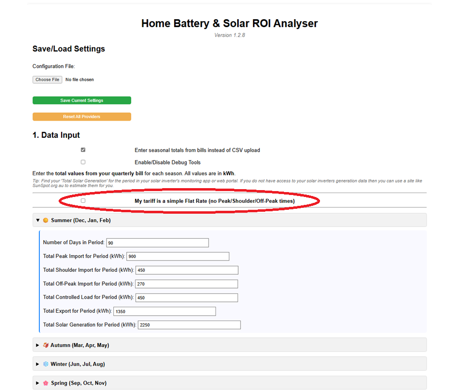
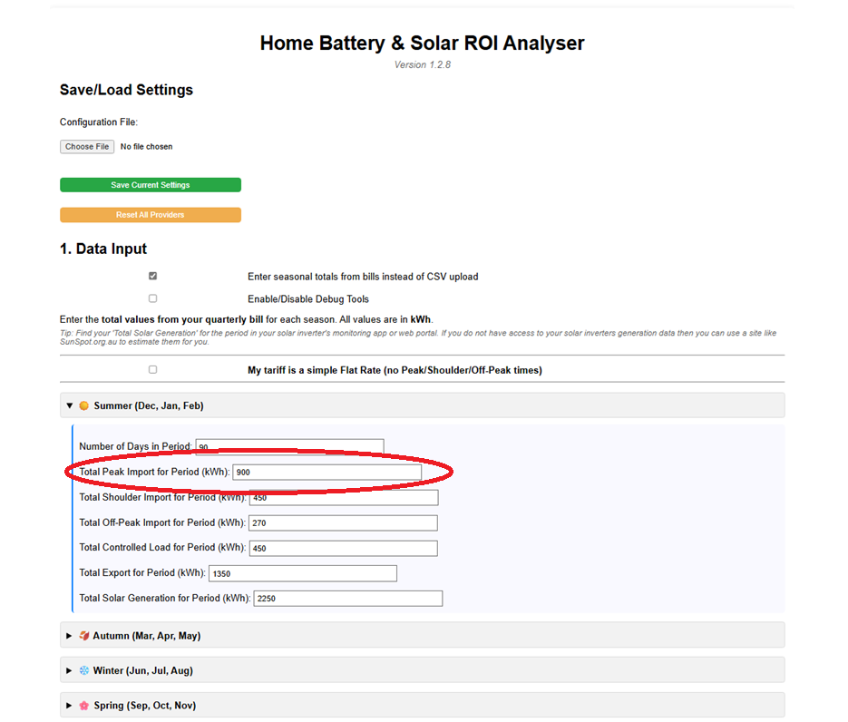
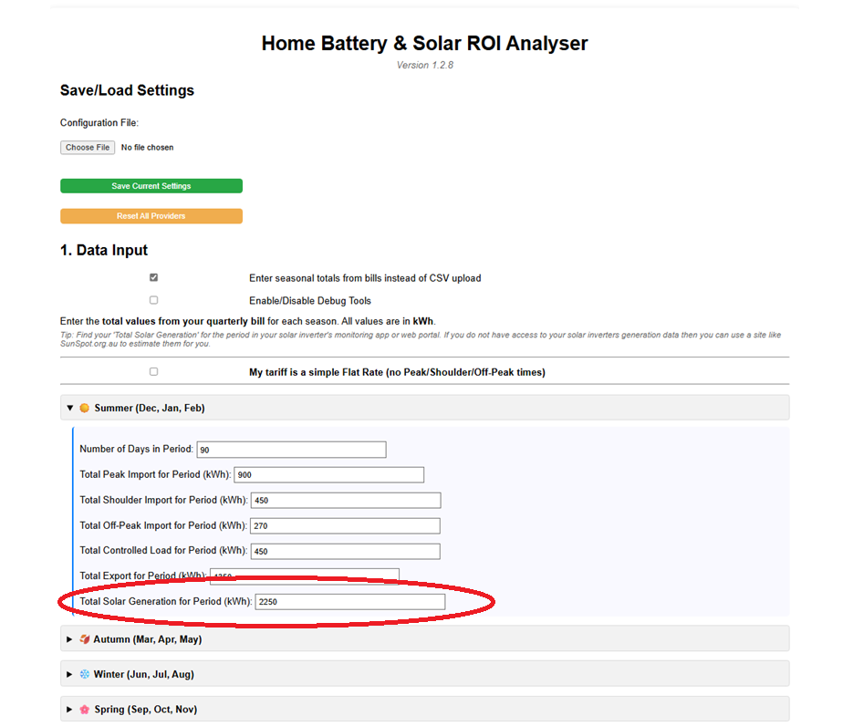
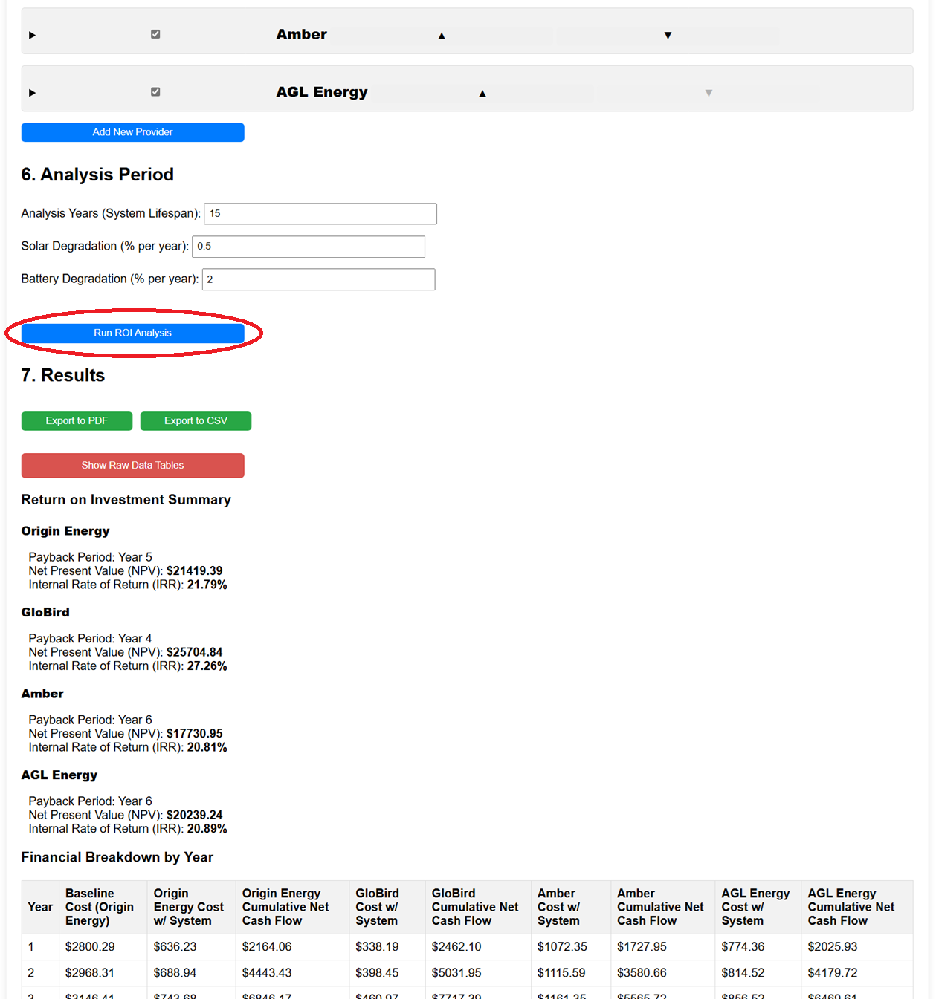

Walkthrough: Entering Bill Data (Manual Mode - ToU Tariff)
This guide explains how to use the "Manual Mode" in the ROI Analyser when you don't have CSV data files and your electricity plan has Time-of-Use (ToU) rates (Peak, Shoulder, Off-Peak). You'll need your quarterly power bills handy.
Step 1: Select Manual Mode
In the "1. Data Input" section of the analyser, check the box labelled:
Use manual daily averages instead of CSV upload
This will hide the CSV upload options and reveal the manual entry fields.

Step 2: Ensure Flat Rate Toggle is OFF
Just below the seasonal input sections, you'll find a checkbox:
My tariff is a simple Flat Rate...
Since this guide is for ToU tariffs, make sure this box is unchecked.

Step 3: Enter Data for Each Season
You'll need to enter the total kWh values from your quarterly bills for each season (Summer, Autumn, Winter, Spring). Expand each season's section:
For each season (e.g., Summer):
- Number of Days in Period: Enter the exact number of days covered by the bill for that season (usually around 90-92).
-
Total Peak Import for Period (kWh): Find the total 'Peak' usage on your bill for this period and enter it.

- Total Shoulder Import for Period (kWh): Look for the line item on your bill corresponding to the 'Shoulder' usage period (the exact name might vary slightly, e.g., 'Shoulder Usage', 'Intermediate') and enter the total kWh used during that period.
- Total Off-Peak Import for Period (kWh): Find the total 'Off-Peak' usage on your bill and enter it.
- Total Controlled Load for Period (kWh): If you have a separate controlled load (like a hot water heater), find its total usage on the bill and enter it here. Enter 0 if you don't have one.
- Total Export for Period (kWh): Find the total 'Solar Feed-in' or 'Export' amount on your bill and enter it.
-
Total Solar Generation for Period (kWh): Important: This is NOT usually on your electricity bill. Find this total in your solar inverter's monitoring app or web portal for the same period. If you can't find it, use an online estimator like SunSpot for your location and system size.

Repeat this process, entering the specific totals from your bills for Autumn, Winter, and Spring.
Step 4: Configure Other Analyser Sections
Using Manual Mode mainly affects the "1. Data Input" section but you still need to configure the rest of the analyser. Click on the Section below for details:
- Section 2: Existing SystemEnter the details of your current solar panels or batteries, if any.
- Section 3: New SystemEnter the details of the system you are considering installing (panel size, battery size, costs).
- Section 4: Financial InputsAdd loan details or discount rates if applicable.
- Section 5: Providers & TariffsConfigure the specific rates and charges so that the analyser can provide a comparson between the different offerings in the financial analysis.
- Section 6: Analysis PeriodSet the lifespan for the analysis and degradation rates.
Step 5: Run the Analysis
Once all sections are configured, click the "Run ROI Analysis" button at the bottom.

The analyser will use the seasonal totals you provided to estimate daily averages and simulate the performance and financial return of your proposed system.